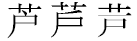

|
|
| Version | 3.1 |
| Editors |
Ken Lunde 小林劍 (lunde@adobe.com) Richard Cook 曲理查 (rscook@unicode.org) John H. Jenkins 井作恆 (john@unicode.org) |
| Date | 2011-11-07 |
| This Version | http://www.unicode.org/reports/tr37/tr37-8.html |
| Previous Version | http://www.unicode.org/reports/tr37/tr37-7.html |
| Latest Version | http://www.unicode.org/reports/tr37/ |
| Latest Proposed Update | http://www.unicode.org/reports/tr37/proposed.html |
| Database | http://www.unicode.org/ivd/ |
| Revision | 8 |
This document describes the organization of the Ideographic Variation Database, and the procedure to add sequences to that database.
This document has been reviewed by Unicode members and other interested parties, and has been approved for publication by the Unicode Consortium. This is a stable document and may be used as reference material or cited as a normative reference by other specifications.
A Unicode Technical Standard (UTS) is an independent specification. Conformance to the Unicode Standard does not imply conformance to any UTS.
Please submit corrigenda and other comments with the online reporting form [Feedback]. Related information that is useful in understanding this document is found in References. For the latest version of the Unicode Standard see [Unicode]. For a list of current Unicode Technical Reports see [Reports]. For more information about versions of the Unicode Standard, see [Versions].
Characters in the Unicode Standard can be represented by a wide variety of glyphs. Occasionally the need arises in text processing to restrict or change the set of glyphs that are to be used to display a character. In special circumstances, this restriction needs to be expressed in plain text rather than by font selection or some other rich text mechanism. The Unicode Standard accommodates those circumstances with variation selectors: the code point of a graphic character can be followed by the code point of a variation selector to identify a restriction on the graphic character. The combination of a graphic character and a variation selector is known as a variation sequence (See Section 15.6, Variation Selectors of [Unicode]).
In the case of Han ideographs, it is impossible to build a single collection of variation sequences that can satisfy all the needs of the users. The requirements from scholars, governments and publishers are too different to be accommodated by a single collection. Instead they can be met by having multiple independent collections. The Ideographic Variation Database ensures that there is a single definition of a given variation sequence, to make interchange of text using such variation sequences reliable.
An Ideographic Variation Sequence (IVS) is a sequence of two coded characters, the first being a character with the Unified_Ideograph property, the second being a variation selector character in the range U+E0100 to U+E01EF.
A glyphic subset for a given character is a subset of the glyphs that are appropriate for displaying that character.
The purpose of the Ideographic Variation Database (IVD) is to associate an IVS with a unique glyphic subset. An IVS which is present in the database is a registered IVS; one can determine reliably the intent of such IVSes when they occur in text by consulting the database, thus those IVSes are suitable for use in text interchange.
IVSes are subject to the usual rules for variation sequences: unregistered IVSes (which are not in the database) should not be used in text interchange, and registered IVSes should be used only to restrict the rendering of their unified ideograph to the glyphic subset associated with the IVS in the database. Furthermore, variation selectors are default ignorable. This implies that registrants are expected to ensure that the glyphic subset associated with an IVS is indeed a subset of the glyphs which are acceptable for the base character alone. Stated another way, the shapes in the glyphic subset of an IVS should be unifiable with the base character of that IVS. One possible way to determine this is to consider the unification rules for Han ideographs; see [Unicode], section 12.1 Han, and [ISO 10646], annex S.
To guarantee the stability of texts using registered IVSes, the association between an IVS and a glyphic subset is permanent: an IVS is never reassigned to another glyphic subset.
While the IVD guarantees that a registered IVS corresponds to a single glyphic subset, and that this association is permanent, it does not guarantee that two different IVSes on the same unified ideograph have non-overlapping or even distinct glyphic subsets.
There is no guarantee that two IVSes using the same variation selector but on different unified ideographs have any relationship, nor will a variation selector be designated for a purpose independently of any base. For example, if some IVS using U+E0100 captures a restriction on the display of left component of its base ideograph, some other IVS also using U+E0100 could capture a restriction on the display of the right component of its base ideograph; and therefore, the effect of U+E0100 does not need to be uniform in all the IVSes it is part of.
Should there be a requirement to register more than 240 IVSes involving the same unified ideograph, the Unicode Consortium will begin the process of encoding additional variation selectors, and make those available for registration of Ideographic Variation Sequences.
To facilitate the organization and use of the IVD, registered IVSes are grouped in collections. This facilitates tracking the glyphic subset associated with an IVS, which is identified as an entry in a collection. It is also expected that the glyphic subsets in a given collection have been selected so that as an aggregate, they satisfy the requirements of a given user community.
If there are sequences that correspond to the same glyphic subset, it becomes a burden for implementers, which can make a collection less likely to be implemented. As a result, in an effort to minimize the number of sequences that correspond to the same glyphic subset, registrants are strongly encouraged, but not required, to share sequences where sequences in a submission are similar to those in an existing collection. Furthermore, as part of the registration process, the registrar shall alert the registrant to the potential of sharing sequences. The sharing of sequences across collections may occur if there is mutual agreement among the registrants for the affected collections.
Registration of a collection does not imply suitability for any particular purpose. The usefulness of a given variation sequence and the usefulness of a collection as a whole depend to a large extent on their use. Registrants are encouraged to describe the intent of their collections, and users are encouraged to evaluate whether a collection is useful for their purpose.
Implementations are free to support any combination of registered sequences, including those from multiple collections or partial subsets of collections.
While the registration process requires that variation sequences be described at the time they are registered, and it strongly encourages the registrant to continue providing public access to that description for as long as possible, it cannot guarantee that this will be case. Users of registered sequences should carefully evaluate whether the continuing public availability of the description is necessary for their purpose, and whether the registrant of the relevant sequences can provide it.
The Ideographic Variation Database consists of two data files. The first, IVD_Collections.txt records the registered collections. The second, IVD_Sequences.txt records the registered sequences.
In each file, lines starting with a '#' character and empty lines are comment lines. The other lines are organized into fields, separated by a semicolon; initial and trailing white space in those fields is not significant. Both files are encoded in UTF-8, using U+000A as the line separator. Both files must end with a comment line “# EOF”.
In IVD_Collections.txt, each line corresponds to an Ideographic Variation Collection, and there are three fields per line:
field 1: the identifier of a collection
field 2: a regular expression for the identifiers within the collection; all such identifiers must match that regular expression. Over time, this regular expression may be extended, as new identifiers are used in the collection.
field 3: the URL of a site describing the collection
In IVD_Sequences.txt, each line corresponds to an Ideographic Variation Sequence and there are three fields per line:
field 1: the code points of the base character and the variation selector, separated by a space
field 2: the identifier of the collection under which the sequence is registered
field 3: the identifier of the sequence, provided by the registrant; this identifier must match the regular expression for the collection
The identifiers for collections and sequences are character strings starting with one of 'A'..'Z', 'a'..'z', and continuing with one of 'A'..'Z', 'a'..'z', '0'..'9', '_' ,'-','+'. The use of '-' and '+' in identifiers is allowed for the purpose of backwards compatibility with existing registrations. Unique programmatic identifiers can be generated from these identifiers by one of two means: 1) folding '-' and '+' into '_', or 2) removing them altogether. The regular expressions for identifiers conform to Perl 5.8 regular expressions [Perl].
The Ideographic Variation Database is populated by submitting registration requests to a registration authority. The first step is to register a collection. After this is done, individual glyphic subsets can be registered in the context of that collection.
The registrant must first create a web page describing the intent of the collection, its principles, and any other data that may be useful for users of the collection.
Once the appropriate page is online, the intent to register the collection must be announced publicly in a manner designated by the registrar and sent to the general Unicode e-mail distribution list [DistList]. This announcement must include the URL of the page(s) describing the proposed collection. This starts a review period of at least 90 days, during which comments and questions about the collection can be submitted to the registrant. The registrant should respond to these comments and questions.
At the end of the review period, the registrant can submit the registration form in Appendix A, together with a written and signed statement that:
the registrant will make reasonable efforts to maintain the stability of that URL and the site it points to
the variation sequences that will be registered in that collection can be used freely, without any limitation, fee or other requirement
all the comments and questions received during the review period have been addressed
Upon receipt of a complete application and the applicable fee if any, the registrar will assign a collection identifier (respecting as much as possible the suggested identifier), and add the collection to the Ideographic Variation Database.
Owners of collections can change the designated representative at any time by notifying the registrar. They can also change the URL of the web site they maintain by notifying the registrar. Ownership of a collection can be transferred to another party by notifying the registrar.
The registration of sequences in that collection can be started concurrently with the registration of the collection itself.
The registrant must first include the proposed sequences in the web page describing the collection (or some page pointing from it). This must include a file in the format of IVD_Sequences.txt, except that the first field must contain only the code point of the base character. The registrant is responsible for ensuring that sequence identifiers are unique for each base character within the collection, including sequences previously registered in that collection, and that they match the regular expression for sequence identifiers in the collection. An application that does not respect these rules will be rejected. Ideally, this description should include representative glyphs for proposed sequences.
Once the page is online, the intent to register the sequences must be announced publicly in a manner designated by the registrar and sent to the general Unicode e-mail distribution list [DistList]. This announcement must include the URL of the page(s) describing the proposed sequences. This starts a review period of at least 90 days, during which comments and questions about the sequences can be submitted to the registrant. The registrant should respond to these comments and questions.
At the end of the review period, the registrant can submit the application for those sequences. The registrant must include one or more representative glyphs for each registered sequence. Independent of the registration process, the registrant may also supply additional representative glyphs for registered sequences of an existing collection.
Upon receipt of a complete application and the applicable fee if any, the registrar will assign a variation selector for each variation sequence, and add the sequences to the Ideographic Variation Database.
The Unicode Consortium will be the registration authority for this database. It will appoint a registrar to handle requests for registration. Collections for which the registration authority itself is the registrant will have no special status over other registered collections. Collections submitted for registration by the registration authority will also undergo the same vetting process as any other submission.
The registration authority may impose a non-refundable processing fee for the registration of collections and sequences. If a registration application is incomplete, the registrar will inform the registrant and accept one corrected application at no fee. Further corrections to the application may require an additional fee.
Collections that are submitted for registration or sponsored by the registration authority are exempt from processing fees.
Application for registration of an Ideographic Variation Sequence Collection
Name and address of the registrant:
Name and email address of the representative:
URL of the web site describing the collection:
Suggested identifier for the collection:
Pattern for the sequence identifiers:
This appendix presents an hypothetical example, where it is desirable to express in plain text that the display of a character occurrence should be restricted.
Consider the unified ideograph U+82A6 ashi; this character can be appropriately rendered by a number of different glyphs:

In the following Japanese sentence (which means roughly “Ms. Ashida is a young lady from Ashiya”), this character occurs twice. The first occurrence could be displayed with any of those four glyphs, and it is therefore not necessary to express any restriction in plain text; the character U+82A6 alone is enough, and usual font selection mechanisms can take care of selecting a glyph appropriate for the context (typically 3 in modern Japanese). On the other hand, the second occurrence is in the name of the town Ashiya, and it is customarily displayed with an older form (4) of the character.

Assuming that some party “Example” wishes to express the restriction above in plain text, they would create a collection for this kind of situation. This collection could be targeted at the representation of person and place names, for example. They would put a description of this collection on their web site, at “http://www.example.com/names”, which could look like this:
This collection of glyphic subsets is intended for the representation of person and place names in Japanese. Elements in this collection are identified by an integer (i.e. match the regular expression “[0-9]+”).
It currently contains a single glyphic subset:
Base Unified Ideograph: U+82A6
Identifier in this collection: 23
Glyphic subset: there is a single horizontal stroke in the radical; the top stroke below the radical is attached and slanting up. Thus
is in the glyphic subset, and  are not
Assuming a successful registration, the collection could be assigned a name like “Example_names”; the glyphic subset 23 in that collection could be associated with the IVS <82A6 E0134>. This would be reflected in the IVD as follows:
IVD_collections.txt would contain one entry for this collection:
Example_names;[0-9]+;http://www.example.com/names
IVD_sequences.txt would contain one entry for this particular glyphic subset:
82A6 E0134; Example_names; 23
Using these entries, the IVS <82A6, E0134> can be traced to entity 23 in the collection “Example_names”, and that collection can be traced to the web site “http://www.example.com/names”, and therefore to the description of the collection and its glyphic subsets.
Now that the IVS is registered, it can be used in plain text interchange. The example sentence could be represented by the character sequence <82A6, 7530, .., 82A6, E0134, ...>. The first occurrence of U+82A6 is not adorned with a variation selector, because there is no need to express any glyphic restriction. The second occurrence uses the registered variation sequence, and can be interpreted unambiguously using the IVD.
Thanks to Hideki Hiura (樋浦秀樹 RIP/追悼) and Eric Muller, co-editors of versions 1 and 2, who were responsible for the original text of this document.
Thanks to Mark Davis, Deborah Goldsmith, Tatsuo Kobayashi, Ken Lunde, Rick McGowan, Chie Oshima, Michel Suignard and Ken Whistler for their help developing the registry and their feedback on this document.
| [DistList] | http://www.unicode.org/consortium/distlist.html |
| [Errata] | Updates and Errata http://www.unicode.org/errata |
| [Feedback] |
http://www.unicode.org/reporting.html
For reporting errors and requesting information online. |
| [ISO 10646] | International Organization for Standardization. Information Technology—Universal Multiple-Octet Coded Character Set (UCS). (ISO/IEC 10646:2003). For availability, see: http://www/iso.org |
| [Perl] | Perl regular expressions http://search.cpan.org/dist/perl/pod/perlre.pod |
| [Reports] | Unicode Technical Reports http://www.unicode.org/reports/ For information on the status and development process for technical reports, and for a list of technical reports. |
| [Unicode] | The Unicode Standard, Version 5.1.0, defined by: The Unicode Standard, Version 5.0 (Boston, MA, Addison-Wesley, 2007. ISBN 0-321-48091-0), as amended by Unicode 5.1.0 (http://www.unicode.org/versions/Unicode5.1.0). |
| [Versions] | Versions of the Unicode Standard http://www.unicode.org/versions/ For details on the precise contents of each version of the Unicode Standard, and how to cite them. |
This section indicates the changes introduced by each revision.
Revision 8
Modified a sentence at the end of Section 1 so that it no longer conflicts with one purpose of Revision 7.
Revision 7
Revision 6 being a Proposed Update, changes between Revisions 5 and 7 are listed here.
Revision 5
Revision 4 being a Proposed Update, changes between Revisions 3 and 5 are listed here.
Revision 3
Revision 2
Revision 1
Copyright © 2005-2011 Unicode, Inc. All Rights Reserved. The Unicode Consortium makes no expressed or implied warranty of any kind, and assumes no liability for errors or omissions. No liability is assumed for incidental and consequential damages in connection with or arising out of the use of the information or programs contained or accompanying this technical report. The Unicode Terms of Use apply.
Unicode and the Unicode logo are trademarks of Unicode, Inc., and are registered in some jurisdictions.